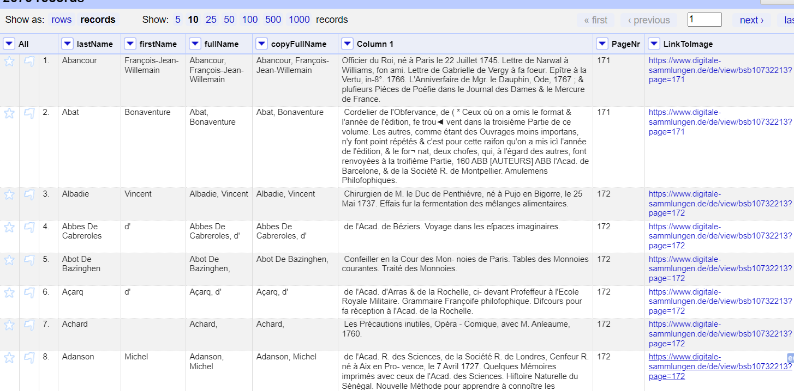

<!doctype html>
<html lang="de">
  <head>
    <meta charset="utf-8">

		<title>Stabi Tool Tuesday</title>

		<meta name="description" content="A colaborative learning space for all things DH">
		<meta name="author" content="Roman Kuhn">

		<meta name="apple-mobile-web-app-capable" content="yes">
		<meta name="apple-mobile-web-app-status-bar-style" content="black-translucent">

		<meta name="viewport" content="width=device-width, initial-scale=1.0, maximum-scale=1.0, user-scalable=no, minimal-ui">

    <link rel="stylesheet" href="dist/reveal.css">
    <link rel="stylesheet" href="dist/theme/white.css">
  </head>
  <body>
    <div class="reveal">
      <div class="slides">
         <section data-markdown data-separator="^\n---\n" data-separator-vertical="^\n--\n" data-separator-vertical="^\n--\n" data-charset="utf-8">
          <script type="text/template">
          <!--content goes here-->

          ## Stabi Tool Tuesday
          ### 2 - Datenstrukturierung mit OpenRefine <!-- .element: class="fragment" -->
          07.11.2023

          ---
          ### Tool Tuesday
          Ein kollaborativer Raum, um DH-Methoden und tools zu diskutieren... auszuprobieren... zu experimentieren...

          ...manchmal auch zu scheitern?

          --
          ### no code
          (für den Moment jedenfalls)

          --
          Folien und weitere Materialien finden sich hier: https://github.com/r0man-ist/tooltuesday

          Die heutigen Folien hier: https://r0man-ist.github.io/tooltuesday/slides/OpenRefine.html

          Kontakt: roman.kuhn@sbb.spk-berlin.de

---
### Überblick über die Reihe
jeden zweiten Dienstag

im Moment sechs Termine fest geplant:
* Datenquellen und Schnittstellen
* **Datenstrukturierung mit OpenRefine**
* OCR/HTR
* Named Entity Recognition (NER)
* Netzwerkvisualierung (Gephi)
* Topic Modeling


--
Orientiert an einer (prototypischen) DH-'pipeline'

Forschungsidee/Forschungsfrage

&#8618; Daten suchen (und finden); Daten generieren

&#8618; Daten aufbereiten

&#8618; Daten auswerten, transformieren

&#8618; Ergebnisse (und neue Daten) publizieren/visualisieren

--
Weitere Termine/Themen bei Bedarf

Bring your own data


---
### Datenstrukturierung mit OpenRefine

Bereinigung und Umwandlung von *strukturierten* Daten

https://openrefine.org/

Installation: https://openrefine.org/docs/manual/installing

---

## Arbeiten mit Strukturierten Daten

[Schnittstellenabfrage](https://sru.k10plus.de/opac-de-1?version=1.1&operation=searchRetrieve&query=pica.xprs=Voltaire&maximumRecords=300&recordSchema=dc)

Import in OpenRefine
- aus Web Adresse
- aus Datei
- aus Zwischenspeicher

--

Record vs. Row

Join & Split <!-- .element: class="fragment" -->

Filter & Facetten <!-- .element: class="fragment" -->

Cluster <!-- .element: class="fragment" -->

Links<!-- .element: class="fragment" -->

---

## Unstrukturierten Text (re)strukturieren 

*La France littéraire* <!-- .element: class="fragment" -->

https://www.digitale-sammlungen.de/de/details/bsb10732213 <!-- .element: class="fragment" -->

--


--


--

## Reguläre Ausdrücke
Doug Knox, "Understanding Regular Expressions," Programming Historian 2 (2013), https://doi.org/10.46430/phen0033

https://regex101.com/

--



--

## Reconciliation

https://reconciliation-api.github.io/testbench/#/

--


--

Projekt exportieren/importieren

---

## HTML und Daten aus dem Web bearbeiten

[Voltaire: *OEdipe*](http://www.theatre-classique.fr/pages/programmes/edition.php?t=../documents/VOLTAIRE_OEDIPE_V.xml)
[Corneille: *OEdipe*](http://www.theatre-classique.fr/pages/programmes/edition.php?t=../documents/CORNEILLEP_OEDIPE.xml)

--


--


</section>
         
        </script>
        
      </div></div></body>
    </div>
    <script src="raphael-min.js"><
      <script src="flowchart-latest.js"></script>
    <script src="dist/reveal.js"></script>
    <script src="plugin/markdown/markdown.js"></script>
    
    <script>
      Reveal.initialize({
    plugins: [ RevealMarkdown ]
  });
    </script>
  </body>
</html>